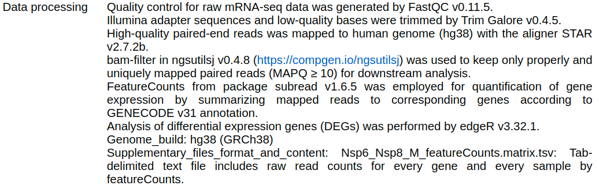

library(tidyverse)
library(magrittr)
library(edgeR)
library(AnnotationHub)
library(rtracklayer)
library(plyranges)
library(patchwork)
library(scales)
library(glue)
library(ggrepel)
library(pheatmap)
theme_set(theme_bw())Differential Gene Expression
RAdelaide 2024
Dr Stevie Pederson
Black Ochre Data Labs
Telethon Kids Institute
Telethon Kids Institute
July 11, 2024
Differential Gene Expression
Differential Gene Expression
- The most common question:
Which genes change expression levels in response to a treatment?
- Need to perform a statistical test on each gene
- Select genes-of-interest using some criteria
- Dealing with count data \(\implies\) can’t be Normally distributed
- Generally assumed to have a Negative Binomial distribution
- Essentially a Poisson distribution with additional variability
Today’s Data
- Data obtained from Gene Expression Omnibus GSE171742
- Stem cell derived cardiomyocytes with 4 treatment groups (Liu et al. 2023)
- All transfected using lentiviral vectors
- Control
- Nsp6 over-expression
- Nsp8 over-expression
- M over-expression
Today’s Data
Today’s Data
- Well documented metadata! 🤓
- We know exact versions of all tools and annotations

Loading Packages
Getting Annotations
- Which one shall we choose?
ah <- AnnotationHub()
ah %>% subset(dataprovider == "Gencode" & genome == "GRCh38") %>% query("v31")AnnotationHub with 9 records
# snapshotDate(): 2024-04-30
# $dataprovider: Gencode
# $species: Homo sapiens
# $rdataclass: GRanges
# additional mcols(): taxonomyid, genome, description,
# coordinate_1_based, maintainer, rdatadateadded, preparerclass, tags,
# rdatapath, sourceurl, sourcetype
# retrieve records with, e.g., 'object[["AH75118"]]'
title
AH75118 | gencode.v31.2wayconspseudos.gff3.gz
AH75119 | gencode.v31.annotation.gff3.gz
AH75120 | gencode.v31.basic.annotation.gff3.gz
AH75121 | gencode.v31.chr_patch_hapl_scaff.annotation.gff3.gz
AH75122 | gencode.v31.chr_patch_hapl_scaff.basic.annotation.gff3.gz
AH75123 | gencode.v31.long_noncoding_RNAs.gff3.gz
AH75124 | gencode.v31.polyAs.gff3.gz
AH75125 | gencode.v31.primary_assembly.annotation.gff3.gz
AH75126 | gencode.v31.tRNAs.gff3.gz Getting Annotations
gtf <- ah[["AH75121"]] # This will take several minutes
genes <- gtf %>%
filter(type == "gene") %>%
select(starts_with("gene"))
genesGRanges object with 66738 ranges and 3 metadata columns:
seqnames ranges strand | gene_id gene_type gene_name
<Rle> <IRanges> <Rle> | <character> <character> <character>
[1] chr1 11869-14409 + | ENSG00000223972.5 transcribed_unproces.. DDX11L1
[2] chr1 14404-29570 - | ENSG00000227232.5 unprocessed_pseudogene WASH7P
[3] chr1 17369-17436 - | ENSG00000278267.1 miRNA MIR6859-1
[4] chr1 29554-31109 + | ENSG00000243485.5 lncRNA MIR1302-2HG
[5] chr1 30366-30503 + | ENSG00000284332.1 miRNA MIR1302-2
... ... ... ... . ... ... ...
[66734] KI270734.1 72411-74814 + | ENSG00000276017.1 protein_coding AC007325.1
[66735] KI270734.1 131494-137392 + | ENSG00000278817.1 protein_coding AC007325.4
[66736] KI270734.1 138082-161852 - | ENSG00000277196.4 protein_coding AC007325.2
[66737] KI270744.1 51009-51114 - | ENSG00000278625.1 snRNA RF00026
[66738] KI270750.1 148668-148843 + | ENSG00000277374.1 snRNA RF00003
-------
seqinfo: 407 sequences from an unspecified genome; no seqlengthsLoading Counts
- Data is exactly as produced by
featureCounts(Liao, Smyth, and Shi 2014)- Tab-delimited but with some weird columns
- Let’s have a sneak preview
# A tibble: 6 × 18
Geneid Chr Start End Strand Length `1_control` `6_control` `11_control` `2_Nsp6` `7_Nsp6`
<chr> <chr> <chr> <chr> <chr> <dbl> <dbl> <dbl> <dbl> <dbl> <dbl>
1 ENSG000000… chrX… 1006… 1006… -;-;-… 4535 5211 6192 4542 4328 5283
2 ENSG000000… chrX… 1005… 1005… +;+;+… 1476 65 178 96 50 86
3 ENSG000000… chr2… 5093… 5093… -;-;-… 1207 1454 1889 1329 1472 1684
4 ENSG000000… chr1… 1698… 1698… -;-;-… 6883 628 548 522 560 636
5 ENSG000000… chr1… 1696… 1696… +;+;+… 5970 191 241 150 146 254
6 ENSG000000… chr1… 2761… 2761… -;-;-… 3382 0 0 0 0 0
# ℹ 7 more variables: `12_Nsp6` <dbl>, `3_Nsp8` <dbl>, `8_Nsp8` <dbl>, `13_Nsp8` <dbl>,
# `4_M` <dbl>, `9_M` <dbl>, `14_M` <dbl>Which columns do we need? How would you parse them?
Loading Counts
- The best form for counts is as a matrix
counts <- read_tsv("data/GSE171742_counts.out.gz") %>%
dplyr::select(Geneid, contains("_")) %>%
as.data.frame() %>%
column_to_rownames("Geneid") %>%
as.matrix()
glimpse(counts) num [1:66738, 1:12] 5211 65 1454 628 191 ...
- attr(*, "dimnames")=List of 2
..$ : chr [1:66738] "ENSG00000000003.14" "ENSG00000000005.6" "ENSG00000000419.12" "ENSG00000000457.14" ...
..$ : chr [1:12] "1_control" "6_control" "11_control" "2_Nsp6" ...Checking Annotations
- Compare these with the annotations we have
[1] "ENSG00000002586.20_PAR_Y" "ENSG00000124333.16_PAR_Y" "ENSG00000124334.17_PAR_Y"
[4] "ENSG00000167393.17_PAR_Y" "ENSG00000168939.11_PAR_Y" "ENSG00000169084.14_PAR_Y"
[7] "ENSG00000169093.16_PAR_Y" "ENSG00000169100.14_PAR_Y" "ENSG00000178605.13_PAR_Y"
[10] "ENSG00000182162.11_PAR_Y" "ENSG00000182378.14_PAR_Y" "ENSG00000182484.15_PAR_Y"
[13] "ENSG00000185203.12_PAR_Y" "ENSG00000185291.11_PAR_Y" "ENSG00000185960.14_PAR_Y"
[16] "ENSG00000196433.13_PAR_Y" "ENSG00000197976.12_PAR_Y" "ENSG00000198223.16_PAR_Y"
[19] "ENSG00000205755.11_PAR_Y" "ENSG00000214717.12_PAR_Y" "ENSG00000223274.6_PAR_Y"
[22] "ENSG00000223484.7_PAR_Y" "ENSG00000223511.7_PAR_Y" "ENSG00000223571.6_PAR_Y"
[25] "ENSG00000223773.7_PAR_Y" "ENSG00000225661.7_PAR_Y" "ENSG00000226179.6_PAR_Y"
[28] "ENSG00000227159.8_PAR_Y" "ENSG00000228410.6_PAR_Y" "ENSG00000228572.7_PAR_Y"
[31] "ENSG00000229232.6_PAR_Y" "ENSG00000230542.6_PAR_Y" "ENSG00000234622.6_PAR_Y"
[34] "ENSG00000234958.6_PAR_Y" "ENSG00000236017.8_PAR_Y" "ENSG00000236871.7_PAR_Y"
[37] "ENSG00000237040.6_PAR_Y" "ENSG00000237531.6_PAR_Y" "ENSG00000237801.6_PAR_Y"
[40] "ENSG00000265658.6_PAR_Y" "ENSG00000270726.6_PAR_Y" "ENSG00000275287.5_PAR_Y"
[43] "ENSG00000277120.5_PAR_Y" "ENSG00000280767.3_PAR_Y" "ENSG00000281849.3_PAR_Y" - Should we remove the suffixes?
Checking Annotations
GRanges object with 2 ranges and 3 metadata columns:
seqnames ranges strand | gene_id gene_type gene_name
<Rle> <IRanges> <Rle> | <character> <character> <character>
[1] chrX 2691187-2741309 + | ENSG00000002586.20 protein_coding CD99
[2] chrY 2691187-2741309 + | ENSG00000002586.20 protein_coding CD99
-------
seqinfo: 407 sequences from an unspecified genome; no seqlengths- How can we resolve this?
Checking Annotations
genes <- genes %>%
mutate(
gene_id = case_when(
duplicated(gene_id) ~ paste0(gene_id, "_PAR_Y"),
TRUE ~ gene_id
)
)
subset(genes, duplicated(gene_id))GRanges object with 0 ranges and 3 metadata columns:
seqnames ranges strand | gene_id gene_type gene_name
<Rle> <IRanges> <Rle> | <character> <character> <character>
-------
seqinfo: 407 sequences from an unspecified genome; no seqlengthsDGE Analysis
Basic Workflow
- Remove low-expressed & undetectable genes
- Normalise the data
- Estimate dispersions
- Perform Statistical Tests
- Enrichment Testing
- Careful checks at every step to inform decisions
DGEList Objects
- We’ll use
edgeRfor DGE analysis (Robinson, McCarthy, and Smyth 2010) - Counts, sample metadata and gene annotations stored in a single
S4objectDGEList: Digital Gene Expression List- Gene & metadata elements need to be
data.frameobjects - Will be coerced if able . . .
DESeq2is a common alternative (Love, Huber, and Anders 2014)- Uses an extension of
SummarizedExperimentobjects
DGEList Objects
- How can we get sample metadata?
samples <- tibble(id = colnames(counts)) %>%
separate(id, into = c("replicate", "treatment"), remove = FALSE) %>%
mutate(
treatment = as.factor(treatment),
group = as.integer(treatment)
)
samples# A tibble: 12 × 4
id replicate treatment group
<chr> <chr> <fct> <int>
1 1_control 1 control 1
2 6_control 6 control 1
3 11_control 11 control 1
4 2_Nsp6 2 Nsp6 3
5 7_Nsp6 7 Nsp6 3
6 12_Nsp6 12 Nsp6 3
7 3_Nsp8 3 Nsp8 4
8 8_Nsp8 8 Nsp8 4
9 13_Nsp8 13 Nsp8 4
10 4_M 4 M 2
11 9_M 9 M 2
12 14_M 14 M 2DGEList Objects
- Annotations appear to match the counts
- Counts for 66,738 genes
- Annotations for 66,738 genes
- But will be in a different order
- Counts in order of name
- Annotations in genomic order
DGEList Objects
GRanges object with 66738 ranges and 3 metadata columns:
seqnames ranges strand | gene_id gene_type
<Rle> <IRanges> <Rle> | <character> <character>
ENSG00000000003.14 chrX 100627109-100639991 - | ENSG00000000003.14 protein_coding
ENSG00000000005.6 chrX 100584936-100599885 + | ENSG00000000005.6 protein_coding
ENSG00000000419.12 chr20 50934867-50958555 - | ENSG00000000419.12 protein_coding
ENSG00000000457.14 chr1 169849631-169894267 - | ENSG00000000457.14 protein_coding
ENSG00000000460.17 chr1 169662007-169854080 + | ENSG00000000460.17 protein_coding
... ... ... ... . ... ...
ENSG00000288107.1 chr10 133565797-133629507 + | ENSG00000288107.1 lncRNA
ENSG00000288108.1 chr5 1931058-1933985 - | ENSG00000288108.1 lncRNA
ENSG00000288109.1 chr17 67658015-67659465 - | ENSG00000288109.1 lncRNA
ENSG00000288110.1 chr8 4496392-4503392 + | ENSG00000288110.1 lncRNA
ENSG00000288111.1 chr3 130181346-130188814 + | ENSG00000288111.1 lncRNA
gene_name
<character>
ENSG00000000003.14 TSPAN6
ENSG00000000005.6 TNMD
ENSG00000000419.12 DPM1
ENSG00000000457.14 SCYL3
ENSG00000000460.17 C1orf112
... ...
ENSG00000288107.1 AL731769.2
ENSG00000288108.1 AC126768.3
ENSG00000288109.1 AC079331.3
ENSG00000288110.1 AC010941.1
ENSG00000288111.1 AC130888.1
-------
seqinfo: 407 sequences from an unspecified genome; no seqlengthsDGEList Objects
dge <- DGEList(
counts = counts,
samples = tibble(id = colnames(counts)) %>% left_join(samples),
genes = genes %>%
setNames(.$gene_id) %>%
.[rownames(counts)] %>%
as.data.frame(row.names = names(.))
)
dgeAn object of class "DGEList"
$counts
1_control 6_control 11_control 2_Nsp6 7_Nsp6 12_Nsp6 3_Nsp8 8_Nsp8 13_Nsp8 4_M
ENSG00000000003.14 5211 6192 4542 4328 5283 4336 4330 5208 4635 4743
ENSG00000000005.6 65 178 96 50 86 83 67 92 80 51
ENSG00000000419.12 1454 1889 1329 1472 1684 1368 1666 2042 1707 1822
ENSG00000000457.14 628 548 522 560 636 492 530 500 498 622
ENSG00000000460.17 191 241 150 146 254 164 161 179 183 173
9_M 14_M
ENSG00000000003.14 5498 5172
ENSG00000000005.6 70 64
ENSG00000000419.12 2293 1987
ENSG00000000457.14 513 560
ENSG00000000460.17 256 228
66733 more rows ...
$samples
group lib.size norm.factors id replicate treatment
1_control 1 38633196 1 1_control 1 control
6_control 1 48184412 1 6_control 6 control
11_control 1 34566631 1 11_control 11 control
2_Nsp6 3 33088151 1 2_Nsp6 2 Nsp6
7_Nsp6 3 41621703 1 7_Nsp6 7 Nsp6
7 more rows ...
$genes
seqnames start end width strand gene_id gene_type
ENSG00000000003.14 chrX 100627109 100639991 12883 - ENSG00000000003.14 protein_coding
ENSG00000000005.6 chrX 100584936 100599885 14950 + ENSG00000000005.6 protein_coding
ENSG00000000419.12 chr20 50934867 50958555 23689 - ENSG00000000419.12 protein_coding
ENSG00000000457.14 chr1 169849631 169894267 44637 - ENSG00000000457.14 protein_coding
ENSG00000000460.17 chr1 169662007 169854080 192074 + ENSG00000000460.17 protein_coding
gene_name
ENSG00000000003.14 TSPAN6
ENSG00000000005.6 TNMD
ENSG00000000419.12 DPM1
ENSG00000000457.14 SCYL3
ENSG00000000460.17 C1orf112
66733 more rows ...DGEList Objects
- Key elements have different but related dimensions
[1] 66738 12[1] 66738 12[1] 12 6[1] 66738 8samplesis column metadata \(\implies\)genesis row metadata
Library Sizes
- The very first step with counts \(\implies\) library sizes
- This is the total number of reads (i.e. RNA fragments) assigned to genes
- Ideally >20m reads per sample
- Those below 10m reads are generally considered as problematic
- Context dependent
Library Sizes
dge$samples %>%
ggplot(aes(replicate, lib.size / 1e6, fill = treatment)) +
geom_col() +
facet_wrap(~treatment, nrow = 1, scales = "free_x") +
labs(x = "Sample", y = "Library Size (millions)", fill = "Treatment") +
scale_y_continuous(expand = expansion(c(0, 0.05))) +
scale_fill_brewer(palette = "Set1"){kind=link}
Library Sizes
- We can get fancy and add the mean value
dge$samples %>%
ggplot(aes(replicate, lib.size / 1e6, fill = treatment)) +
geom_col() +
geom_hline(
aes(yintercept = lib.size),
data = . %>% summarise(lib.size = mean(lib.size / 1e6)),
linetype = 2, colour = "grey30"
) +
facet_wrap(~treatment, nrow = 1, scales = "free_x") +
labs(x = "Sample", y = "Library Size (millions)", fill = "Treatment") +
scale_y_continuous(expand = expansion(c(0, 0.05))) +
scale_fill_brewer(palette = "Set1"){kind=link}
Detected Vs Undetected Genes
- By adding counts across samples and seeing how many are zero
\(\implies\) non-detectable genes
- Genes with low counts can also be removed
- These end up being highly variable
- Uninformative statistically
Detected Vs Undetected Genes
- No set method for considering a gene as too low to bother with
- Can use raw counts below some value
- Counts within a group above some value \(\implies\) detected within a treatment
- Counts per million reads (CPM) is a common measure used in abundance analysis
- Take the library sizes / 1e6 & divide counts by this value \(\implies\) CPM
- Can also use logCPM
- Adds a non-zero value to every gene to avoid zeroes
Detected Vs Undetected Genes
edgeRprovides a functionfilterByExpr()- Flags genes for removal or discarding based on counts
- Set minimum CPM as
min.count\(\times 1e6\) /median(lib.size) - Set minimum total counts
- Genes are retained if CPM > minCPM in \(\geq n\) samples
- \(n\) is the smallest treatment group
- Default settings may be a little generous for this dataset
Detected Vs Undetected Genes
- If we require > 1CPM in at least 3 samples
Detected Vs Undetected Genes
A <- dge$counts %>%
cpm(log = TRUE) %>%
as_tibble(rownames = "gene_id") %>%
pivot_longer(-all_of("gene_id"), names_to = "id", values_to = "logCPM") %>%
left_join(dge$samples) %>%
ggplot(aes(logCPM, after_stat(density), group = id)) +
geom_density(aes(colour = treatment)) +
ggtitle(glue("Before Filtering: {comma(length(keep))} genes")) +
labs(y = "Density", colour = "Treatment") +
scale_colour_brewer(palette = "Set1")
B <- dge$counts[keep,] %>%
cpm(log = TRUE) %>%
as_tibble(rownames = "gene_id") %>%
pivot_longer(-all_of("gene_id"), names_to = "id", values_to = "logCPM") %>%
left_join(dge$samples) %>%
ggplot(aes(logCPM, after_stat(density), group = id)) +
geom_density(aes(colour = treatment)) +
ggtitle(glue("After Filtering: {comma(sum(keep))} genes")) +
labs(y = "Density", colour = "Treatment") +
scale_colour_brewer(palette = "Set1")
A + B + plot_layout(guides = "collect", axes = "collect"){kind=link}
Detected Vs Undetected Genes
- Create new object once satisfied with the filtering strategy
- Passing the logical vector will subset
counts&genescorrectly- The original library sizes are retained
An object of class "DGEList"
$counts
1_control 6_control 11_control 2_Nsp6 7_Nsp6 12_Nsp6 3_Nsp8 8_Nsp8 13_Nsp8 4_M
ENSG00000000003.14 5211 6192 4542 4328 5283 4336 4330 5208 4635 4743
ENSG00000000005.6 65 178 96 50 86 83 67 92 80 51
ENSG00000000419.12 1454 1889 1329 1472 1684 1368 1666 2042 1707 1822
ENSG00000000457.14 628 548 522 560 636 492 530 500 498 622
ENSG00000000460.17 191 241 150 146 254 164 161 179 183 173
9_M 14_M
ENSG00000000003.14 5498 5172
ENSG00000000005.6 70 64
ENSG00000000419.12 2293 1987
ENSG00000000457.14 513 560
ENSG00000000460.17 256 228
13891 more rows ...
$samples
group lib.size norm.factors id replicate treatment
1_control 1 38633196 1 1_control 1 control
6_control 1 48184412 1 6_control 6 control
11_control 1 34566631 1 11_control 11 control
2_Nsp6 3 33088151 1 2_Nsp6 2 Nsp6
7_Nsp6 3 41621703 1 7_Nsp6 7 Nsp6
7 more rows ...
$genes
seqnames start end width strand gene_id gene_type
ENSG00000000003.14 chrX 100627109 100639991 12883 - ENSG00000000003.14 protein_coding
ENSG00000000005.6 chrX 100584936 100599885 14950 + ENSG00000000005.6 protein_coding
ENSG00000000419.12 chr20 50934867 50958555 23689 - ENSG00000000419.12 protein_coding
ENSG00000000457.14 chr1 169849631 169894267 44637 - ENSG00000000457.14 protein_coding
ENSG00000000460.17 chr1 169662007 169854080 192074 + ENSG00000000460.17 protein_coding
gene_name
ENSG00000000003.14 TSPAN6
ENSG00000000005.6 TNMD
ENSG00000000419.12 DPM1
ENSG00000000457.14 SCYL3
ENSG00000000460.17 C1orf112
13891 more rows ...Normalisation
- Normalisation is a very common step in transcriptomic analysis
- Helps to account for differences in library composition
- e.g. are some libraries dominated by a handful of highly abundant genes
- The default in
edgeRis TMM (Robinson and Oshlack 2010) DESeq2uses RLE normalisation- Very similar in principle
Statistical Analysis of Counts
- Poisson models number of events per unit
- e.g. telephone calls per minute
- The rate parameter (\(\lambda\)) models this
- mean occurrence = average rate = \(\lambda\)
- Variance is fixed at \(\lambda\)
- If variance \(\neq \lambda \implies\) not Poisson data
- The basic model for
edgeRis a Negative Binomial Model- NB: mean = \(\lambda\); variance = \(\lambda + r\)
- Multiple strategies for obtaining estimates
Statistical Analysis of Counts
- Counts / gene (i.e. \(y_{gi}\)) are a function of library size (\(L_i\))
- Gene length is fixed across samples \(\implies\) library size is not
- Dividing by library size is a way of normalising counts
\[ \log (y_{gi} / L_i) = \beta_0 + \beta_1 + ... \]
Normalisation
- Calculation of normalisation factors (\(Y_i\)) per sample
- The idealised normalisation factor is \(Y_i = 1\)
- Can use scaled library sizes \(L^*_i = Y_i \times L_i\)
\[ \log (y_{gi} / L^*_i) = \beta_0 + \beta_1 + ... \]
TMM Normalisation
group lib.size norm.factors id replicate treatment
1_control 1 38633196 0.9943180 1_control 1 control
6_control 1 48184412 0.9770121 6_control 6 control
11_control 1 34566631 0.9883140 11_control 11 control
2_Nsp6 3 33088151 1.0157571 2_Nsp6 2 Nsp6
7_Nsp6 3 41621703 0.9963827 7_Nsp6 7 Nsp6
12_Nsp6 3 32724713 1.0060007 12_Nsp6 12 Nsp6
3_Nsp8 4 33502022 1.0076816 3_Nsp8 3 Nsp8
8_Nsp8 4 41364663 0.9977052 8_Nsp8 8 Nsp8
13_Nsp8 4 36288023 1.0027832 13_Nsp8 13 Nsp8
4_M 2 36851725 1.0081808 4_M 4 M
9_M 2 41546877 0.9987653 9_M 9 M
14_M 2 43587502 1.0076991 14_M 14 MPCA Analysis
edgeRoffersplotMDS()for quick exploration
PCA Analysis
- logCPM values are very useful for PCA
- Will now be calculated using the normalisation factors
Importance of components:
PC1 PC2 PC3 PC4 PC5 PC6 PC7 PC8 PC9
Standard deviation 66.6493 50.4749 45.2310 31.7401 29.3998 25.88752 24.74707 21.51801 20.94233
Proportion of Variance 0.3197 0.1833 0.1472 0.0725 0.0622 0.04823 0.04407 0.03332 0.03156
Cumulative Proportion 0.3197 0.5030 0.6502 0.7227 0.7849 0.83316 0.87723 0.91056 0.94212
PC10 PC11 PC12
Standard deviation 20.27916 19.82675 2.753e-13
Proportion of Variance 0.02959 0.02829 0.000e+00
Cumulative Proportion 0.97171 1.00000 1.000e+00PCA Analysis
- PC1 vs PC2 shown below \(\implies\) easily modified to other components
{kind=link}
pca %>%
broom::tidy() %>%
pivot_wider(names_from = "PC", names_prefix = "PC", values_from = "value") %>%
dplyr::rename(id = row) %>%
left_join(dge_filter$samples) %>%
ggplot(aes(PC1, PC2, colour = treatment)) +
geom_point() +
geom_text_repel(aes(label = id), show.legend = FALSE) +
labs(
x = glue("PC1 ({percent(prop_var['PC1'])} Variance)"),
y = glue("PC2 ({percent(prop_var['PC2'])} Variance)"),
colour = "Treatment"
) +
scale_colour_brewer(palette = "Set1"){kind=link}
PCA Analysis
- What do we think the above is telling us?
- Does it look like treatment is contributing to the variance?
- Are there any other potential sources of variability?
The Design Matrix
- Before proceeding need to define a design matrix
(Intercept) treatmentM treatmentNsp6 treatmentNsp8
1_control 1 0 0 0
6_control 1 0 0 0
11_control 1 0 0 0
2_Nsp6 1 0 1 0
7_Nsp6 1 0 1 0
12_Nsp6 1 0 1 0
3_Nsp8 1 0 0 1
8_Nsp8 1 0 0 1
13_Nsp8 1 0 0 1
4_M 1 1 0 0
9_M 1 1 0 0
14_M 1 1 0 0
attr(,"assign")
[1] 0 1 1 1
attr(,"contrasts")
attr(,"contrasts")$treatment
[1] "contr.treatment"The Design Matrix
- The first column will estimate average expression in control samples
- Remaining columns estimate the difference due to treatments
- (Almost) always modelled on the log2 scale \(\implies\) logFC
Estimating Dispersions
- We can estimate the dispersion parameter across the entire dataset
edgeRmodels consider technical noise as Poisson with biological noise as over-dispersion- This adds multiple elements to the
DGEList- Essential for
edgeRmodels
- Essential for
- Initial estimates are moderated using a global trend during model fitting
Estimating Dispersions
Model Fitting
- The recommended approach for
edgeRis to use Quasi-Likelihood fits (Lund et al. 2012)- Allows flexibility in over-dispersion parameters
- First we fit the model \(\implies\) then perform testing
- Using our design matrix, we will fit the model for all coefficients in
X- Perform tests within each co-efficient
- We’ll use the ‘M’ treatment
Model Testing
- Statistical tests use quasi-likelihood F-tests
- Use moderate dispersions (Empirical Bayes)
- By default, the top10 genes are returned
Coefficient: treatmentM
seqnames start end width strand gene_id gene_type
ENSG00000065609.14 chr6 83552880 83709691 156812 - ENSG00000065609.14 protein_coding
ENSG00000133878.9 chr8 33591330 33600023 8694 - ENSG00000133878.9 protein_coding
ENSG00000112837.17 chr6 84687351 84764598 77248 - ENSG00000112837.17 protein_coding
ENSG00000125730.16 chr19 6677704 6730562 52859 - ENSG00000125730.16 protein_coding
ENSG00000144810.16 chr3 99638475 99799226 160752 + ENSG00000144810.16 protein_coding
ENSG00000112562.18 chr6 168441151 168673445 232295 + ENSG00000112562.18 protein_coding
ENSG00000118137.9 chr11 116835751 116837950 2200 - ENSG00000118137.9 protein_coding
ENSG00000101335.10 chr20 36541497 36551447 9951 + ENSG00000101335.10 protein_coding
ENSG00000156113.23 chr10 76869601 77638369 768769 - ENSG00000156113.23 protein_coding
ENSG00000165118.15 chr9 83938311 83956986 18676 - ENSG00000165118.15 protein_coding
gene_name logFC logCPM F PValue FDR
ENSG00000065609.14 SNAP91 -4.298482 5.7855158 1244.7901 4.457146e-13 6.193650e-09
ENSG00000133878.9 DUSP26 -6.406627 0.9996001 320.3749 8.859485e-11 6.155570e-07
ENSG00000112837.17 TBX18 4.614608 1.3852329 463.1117 1.329742e-10 6.159367e-07
ENSG00000125730.16 C3 7.404154 1.9905031 222.5631 7.853570e-10 2.728330e-06
ENSG00000144810.16 COL8A1 1.897573 4.2552562 221.7729 7.221342e-09 2.006955e-05
ENSG00000112562.18 SMOC2 2.975471 2.9960180 214.3021 8.720084e-09 2.019572e-05
ENSG00000118137.9 APOA1 -1.909907 6.8931539 201.6088 1.216484e-08 2.414894e-05
ENSG00000101335.10 MYL9 2.208139 9.0902053 192.7708 1.553354e-08 2.553771e-05
ENSG00000156113.23 KCNMA1 2.906831 4.0355987 190.5689 1.653997e-08 2.553771e-05
ENSG00000165118.15 C9orf64 5.728040 1.8379059 176.1002 2.011799e-08 2.556070e-05Model Testing
- Can easily collect all genes into a manageable object
res_M <- fit %>%
glmQLFTest(coef = "treatmentM") %>%
topTags(n = Inf) %>%
as.data.frame() %>%
as_tibble()
res_M# A tibble: 13,896 × 13
seqnames start end width strand gene_id gene_type gene_name logFC logCPM F PValue
<fct> <int> <int> <int> <fct> <chr> <chr> <chr> <dbl> <dbl> <dbl> <dbl>
1 chr6 83552880 8.37e7 156812 - ENSG00… protein_… SNAP91 -4.30 5.79 1245. 4.46e-13
2 chr8 33591330 3.36e7 8694 - ENSG00… protein_… DUSP26 -6.41 1.00 320. 8.86e-11
3 chr6 84687351 8.48e7 77248 - ENSG00… protein_… TBX18 4.61 1.39 463. 1.33e-10
4 chr19 6677704 6.73e6 52859 - ENSG00… protein_… C3 7.40 1.99 223. 7.85e-10
5 chr3 99638475 9.98e7 160752 + ENSG00… protein_… COL8A1 1.90 4.26 222. 7.22e- 9
6 chr6 168441151 1.69e8 232295 + ENSG00… protein_… SMOC2 2.98 3.00 214. 8.72e- 9
7 chr11 116835751 1.17e8 2200 - ENSG00… protein_… APOA1 -1.91 6.89 202. 1.22e- 8
8 chr20 36541497 3.66e7 9951 + ENSG00… protein_… MYL9 2.21 9.09 193. 1.55e- 8
9 chr10 76869601 7.76e7 768769 - ENSG00… protein_… KCNMA1 2.91 4.04 191. 1.65e- 8
10 chr9 83938311 8.40e7 18676 - ENSG00… protein_… C9orf64 5.73 1.84 176. 2.01e- 8
# ℹ 13,886 more rows
# ℹ 1 more variable: FDR <dbl>Multiple Testing
- Under H0: ~1 in 20 random p-values will be < 0.05
- With ~14,000 genes \(\implies\) about 700 expected
- These would be Type 1 errors \(\implies\) false positives
- We say something is happening, when it’s just noise
Inspection of P-values
- Under H0 \(\implies\) \(p \sim \mathcal{U}(0, 1)\)
- Under HA no distribution \(\implies\) peak near zero
{kind=link}
Volcano Plots
- Plot developed during microarray analysis
- Shows logFC against significance (\(p\)-values)
{kind=link}
MA Plots
- Two-colour microarray data introduced MA plots
- Signal from two-colour arrays layered treat vs control in a single spot
Afor intensity averagesMfor mean intensity differences
- Still commonly used and the language remains
- Sometimes called MD (mean-difference) plots
edgeRprovidesplotMD()
- Show average expression on the
x-axis and logFC ony-axis- How highly expressed are any DE genes?
MA Plots
- Often start with an exploration then customise for our data
{kind=link}
res_M %>%
arrange(desc(PValue)) %>% # Why do this?
ggplot(aes(logCPM, logFC, colour = FDR < 0.05)) +
geom_point(alpha = 0.7) +
geom_smooth(se = FALSE, colour = 'royalblue3', method = "lm") +
geom_label_repel(
aes(label = gene_name),
data = . %>%
dplyr::filter(FDR < 0.05) %>%
arrange(desc(abs(logFC))) %>%
dplyr::slice(1:10),
size = 3, show.legend = FALSE
) +
scale_colour_manual(values = c("black", "red")) {kind=link}
Filtering of DE Genes
- There is a tendency of the most extreme logFC to be in low expressed genes
- The ratio of any number over a small number will \(\rightarrow \infty\)
- If there are “too many†DE genes \(\implies\) should we filter results?
- Early approaches were to filter on extreme logFC
- Biased results towards low-expressed genes
Range-Based Hypothesis Testing
- Traditional H0 is \(\mu = 0\) against HA \(\mu \neq 0\)
- An alternative is to use a range-based H0 (McCarthy and Smyth 2009)
- Implemented in
glmTreat() - Default range is FC > 20% in either direction
Range-Based Hypothesis Testing
res_treatM %>%
arrange(desc(PValue)) %>% # Why do this?
ggplot(aes(logCPM, logFC, colour = FDR < 0.05)) +
geom_point(alpha = 0.7) +
geom_smooth(se = FALSE, colour = 'royalblue3', method = "lm") +
geom_label_repel(
aes(label = gene_name),
data = . %>%
dplyr::filter(FDR < 0.05) %>%
arrange(desc(abs(logFC))) %>%
dplyr::slice(1:10),
size = 3, show.legend = FALSE
) +
scale_colour_manual(values = c("black", "red")) {kind=link}
Checking Individual Genes
- Checking individual genes for changes in expression can be helpful
- Choosing a small number helps with interpretability
cpm(dge_filter, log = TRUE) %>%
.[res_treatM$gene_id[1:9],] %>%
as_tibble(rownames = "gene_id") %>%
pivot_longer(-all_of("gene_id"), names_to = "id", values_to = "logCPM") %>%
left_join(dge$genes) %>%
left_join(dge$samples) %>%
mutate(gene_name = fct_inorder(gene_name)) %>%
ggplot(aes(treatment, logCPM, fill = treatment)) +
geom_boxplot() +
facet_wrap(~gene_name, scales = "free_y") +
scale_fill_brewer(palette = "Set1"){kind=link}
Heatmaps Across Multiple Genes
- Showing larger groups of genes can also be informative
- Enables very basic clustering of genes
- The package
pheatmapis a common resource - Pre-dates the
tidyverse\(\implies\)matrixanddata.frameobjects
Heatmaps Across Multiple Genes
- Form a matrix from the top genes
- Subtract the mean expression value
- This retains variability but shows direction of change
- Set rownames to be the gene-names
- Choosing too many genes can confuse rather than illustrate the results!!!
Heatmaps Across Multiple Genes
- Groups can be set using column annotations (
annotation_col)- Requires a
data.framewith rownames
- Requires a
- Group colours can also be passed as a list
{kind=link}
Using DESeq2
DESeq2
- Another common package for RNASeq analysis is
DESeq2(Love, Huber, and Anders 2014) - Uses
S4object more interconnected to other Bioconductor classes - Different approach to dispersions
- Different statistical testing
- Feels a bit more like a “black-box†to me
- More default settings for a similar workflow \(\implies\) fewer manual steps
- Is a very high-quality approach (as is
edgeR)
DESeq2
library(DESeq2)
library(extraChIPs)
dds <- DESeqDataSetFromMatrix(
dge_filter$counts,
colData = samples,
rowData = dge_filter$genes %>%
makeGRangesFromDataFrame(keep.extra.columns = TRUE),
design = ~ treatment
)
is(dds)[1] "DESeqDataSet" "RangedSummarizedExperiment" "SummarizedExperiment"
[4] "RectangularData" "Vector" "Annotated"
[7] "vector_OR_Vector" Summarized Experiment Objects
SummarizedExperimentobjects are a core Bioconductor class
colData assays NAMES elementMetadata metadata
"DataFrame" "Assays_OR_NULL" "character_OR_NULL" "DataFrame" "list" - Any number of
assayscan be added- Usually matrices with identical dimensions
colDataholds the sample-level metadata
Summarized Experiment Objects
RangedSummarizedExperimentobjects are a subclass ofSummarizedExperiment
rowRanges colData assays
"GenomicRanges_OR_GRangesList" "DataFrame" "Assays_OR_NULL"
NAMES elementMetadata metadata
"character_OR_NULL" "DataFrame" "list" - All slots from a
SummarizedExperiment rowRangesallow metadata for each row of counts- Usually a
GRangeswith optionalmcols
- Usually a
DESeqDataSet Objects
- Extends
RangedSummarizedExperimentobjects
design dispersionFunction rowRanges
"ANY" "function" "GenomicRanges_OR_GRangesList"
colData assays NAMES
"DataFrame" "Assays_OR_NULL" "character_OR_NULL"
elementMetadata metadata
"DataFrame" "list" - Includes a design matrix & dispersionFunction
DESeqDataSet Objects
- Multiple data access method exist
colData(),rowData(),rowRanges()assay(),counts()
DESeqDataSet Objects
- All functions & methods written for parent classes work with a
DESeqDataSet tidyomicsspecifically developed forSummarizedExperimentobjects- Numerous functions & methods for
SummarizedExperimentobjects
DESeqDataSet Objects
DESeqDataSet Objects
DESeqDataSet Objects
DESeqDataSet Objects
DESeqDataSet Objects
DGE Analysis
- The function
DESeq()wraps multiple steps - Normalisation factors \(\equiv\)
sizeFactorsadded tocolData- Uses the RLE method (very similar to TMM)
- Additional assays will be added along with
rowDatacolumns - Testing is performed using the Wald Test
class: DESeqDataSet
dim: 13896 12
metadata(1): version
assays(5): counts logCPM mu H cooks
rownames(13896): ENSG00000000003.14 ENSG00000000005.6 ... ENSG00000288022.1
ENSG00000288066.1
rowData names(33): gene_id gene_type ... deviance maxCooks
colnames(12): 1_control 6_control ... 9_M 14_M
colData names(5): id replicate treatment group sizeFactorDispersions
DGE Results
[1] "Intercept" "treatment_M_vs_control" "treatment_Nsp6_vs_control"
[4] "treatment_Nsp8_vs_control"log2 fold change (MLE): treatment M vs control
Wald test p-value: treatment M vs control
DataFrame with 13896 rows and 6 columns
baseMean log2FoldChange lfcSE stat pvalue padj
<numeric> <numeric> <numeric> <numeric> <numeric> <numeric>
ENSG00000000003.14 4918.2962 -0.0734152 0.0548639 -1.338132 1.80853e-01 0.444613885
ENSG00000000005.6 80.3602 -0.8692770 0.3071633 -2.830016 4.65457e-03 0.036358343
ENSG00000000419.12 1710.4219 0.3642342 0.0843509 4.318081 1.57392e-05 0.000353798
ENSG00000000457.14 551.4245 -0.0386804 0.1648748 -0.234605 8.14516e-01 0.923290340
ENSG00000000460.17 190.9980 0.1536008 0.1744186 0.880645 3.78510e-01 0.650754388
... ... ... ... ... ... ...
ENSG00000287966.1 43.9669 -0.5843052 0.448175 -1.3037444 0.19232074 0.4593943
ENSG00000287978.1 75.1925 0.0260297 0.412190 0.0631498 0.94964723 0.9831753
ENSG00000288012.1 32.8771 -0.2789995 0.462572 -0.6031481 0.54641019 0.7777428
ENSG00000288022.1 36.4753 -0.8772781 0.328395 -2.6714106 0.00755332 0.0523458
ENSG00000288066.1 438.5152 0.0771334 0.210274 0.3668230 0.71375102 0.8722577DGE Results
- This analysis gave 1,972 DE genes
- To sort by significance
res_deseq2_M %>%
as_tibble(rownames = "gene_id") %>%
left_join(as_tibble(genes)) %>%
arrange(pvalue) %>%
dplyr::select(range, starts_with("gene"), everything())# A tibble: 13,896 × 10
range gene_id gene_type gene_name baseMean log2FoldChange lfcSE stat pvalue padj
<chr> <chr> <chr> <chr> <dbl> <dbl> <dbl> <dbl> <dbl> <dbl>
1 chr6:835528… ENSG00… protein_… SNAP91 2097. -4.29 0.123 -34.9 2.49e-267 3.45e-263
2 chr3:996384… ENSG00… protein_… COL8A1 727. 1.91 0.136 14.0 7.91e- 45 5.49e- 41
3 chr6:168441… ENSG00… protein_… SMOC2 302. 2.98 0.215 13.9 1.21e- 43 5.61e- 40
4 chr10:76869… ENSG00… protein_… KCNMA1 624. 2.91 0.212 13.8 3.59e- 43 1.25e- 39
5 chr20:36541… ENSG00… protein_… MYL9 20813. 2.22 0.162 13.7 1.13e- 42 3.14e- 39
6 chr6:846873… ENSG00… protein_… TBX18 97.4 4.65 0.340 13.7 1.41e- 42 3.26e- 39
7 chr11:11683… ENSG00… protein_… APOA1 4526. -1.90 0.143 -13.3 3.88e- 40 7.70e- 37
8 chr9:164095… ENSG00… protein_… BNC2 257. 3.50 0.265 13.2 5.34e- 40 9.28e- 37
9 chr22:17178… ENSG00… protein_… ADA2 734. -1.20 0.0960 -12.5 7.89e- 36 1.22e- 32
10 chr6:560565… ENSG00… protein_… COL21A1 343. -2.37 0.198 -12.0 5.38e- 33 7.48e- 30
# ℹ 13,886 more rowsVisualising Results
Filtering Results
- The approach taken by
DESeq2is different fromedgeR’s range-based H0 - Shrinks the estimates of logFC (Zhu, Ibrahim, and Love 2019)
- Returns
s-values (false sign or small)
res_lfcshrink_M <- lfcShrink(
dds, "treatment_M_vs_control", lfcThreshold = log2(1.2)
)
res_lfcshrink_Mlog2 fold change (MAP): treatment M vs control
DataFrame with 13896 rows and 4 columns
baseMean log2FoldChange lfcSE svalue
<numeric> <numeric> <numeric> <numeric>
ENSG00000000003.14 4918.2962 -0.0675130 0.0529894 0.7792084
ENSG00000000005.6 80.3602 -0.6065355 0.3664508 0.0413765
ENSG00000000419.12 1710.4219 0.3378204 0.0851769 0.0458250
ENSG00000000457.14 551.4245 -0.0192876 0.1236106 0.6995773
ENSG00000000460.17 190.9980 0.0854692 0.1358403 0.5657148
... ... ... ... ...
ENSG00000287966.1 43.9669 -0.09359097 0.200388 0.4204071
ENSG00000287978.1 75.1925 0.00454662 0.168958 0.6258674
ENSG00000288012.1 32.8771 -0.03896311 0.176866 0.5545518
ENSG00000288022.1 36.4753 -0.56074752 0.410878 0.0593301
ENSG00000288066.1 438.5152 0.03309121 0.140818 0.6493741Filtering Results
- This has reduced the original 1,972 DE genes to 1,270
res_lfcshrink_M %>%
as_tibble(rownames = "gene_id") %>%
left_join(as_tibble(genes)) %>%
arrange(svalue) %>%
dplyr::filter(svalue < 0.05) %>%
dplyr::select(range, starts_with("gene"), everything())# A tibble: 1,270 × 8
range gene_id gene_type gene_name baseMean log2FoldChange lfcSE svalue
<chr> <chr> <chr> <chr> <dbl> <dbl> <dbl> <dbl>
1 chr6:83552880-83709691:- ENSG0000… protein_… SNAP91 2097. -4.28 0.123 0
2 chr22:17178790-17258235:- ENSG0000… protein_… ADA2 734. -1.18 0.0966 0
3 chr11:116835751-116837950:- ENSG0000… protein_… APOA1 4526. -1.88 0.144 0
4 chr6:56056590-56394094:- ENSG0000… protein_… COL21A1 343. -2.33 0.199 0
5 chr8:33591330-33600023:- ENSG0000… protein_… DUSP26 73.3 -6.34 0.597 0
6 chr9:128255829-128275995:- ENSG0000… protein_… GOLGA2 1615. -0.942 0.0817 0
7 chr6:84687351-84764598:- ENSG0000… protein_… TBX18 97.4 4.60 0.338 9.79e-39
8 chr6:168441151-168673445:+ ENSG0000… protein_… SMOC2 302. 2.95 0.216 1.28e-36
9 chr10:76869601-77638369:- ENSG0000… protein_… KCNMA1 624. 2.88 0.212 5.28e-36
10 chr9:16409503-16870843:- ENSG0000… protein_… BNC2 257. 3.46 0.266 1.29e-34
# ℹ 1,260 more rowsComparison of Approaches
- Using the most conservative analyses
- Genes along zero for
DESeq2were a result of shrinkage
Export Results
- Save the
edgeRresults using the following
Conclusion
DESeq2data structure integrate nicely with other Bioconductor packagesedgeRcan also handleSummarizedExperimentobjects (mostly)- No right or wrong method or data classes to use
- Results were still broadly consistent
DESeq2also has many options for parameter/model choice not covered here
SummarizedExperimentobjects share much withSingleCellExperimentobjects- Have helped with multiple analyses & seem preferable to
Seurat(IMHO)Seuratis everywhere but I spend a lot of time debugging for people
References

Liao, Yang, Gordon K Smyth, and Wei Shi. 2014. “featureCounts: An Efficient General Purpose Program for Assigning Sequence Reads to Genomic Features.†Bioinformatics 30 (7): 923–30.
Liu, Juli, Shiyong Wu, Yucheng Zhang, Cheng Wang, Sheng Liu, Jun Wan, and Lei Yang. 2023. “SARS-CoV-2 Viral Genes Nsp6, Nsp8, and M Compromise Cellular ATP Levels to Impair Survival and Function of Human Pluripotent Stem Cell-Derived Cardiomyocytes.†Stem Cell Res. Ther. 14 (1): 249.
Love, Michael I., Wolfgang Huber, and Simon Anders. 2014. “Moderated Estimation of Fold Change and Dispersion for RNA-Seq Data with DESeq2.†Genome Biology 15: 550. https://doi.org/10.1186/s13059-014-0550-8.
Lund, Steven P, Dan Nettleton, Davis J McCarthy, and Gordon K Smyth. 2012. “Detecting Differential Expression in RNA-sequence Data Using Quasi-Likelihood with Shrunken Dispersion Estimates.†Stat. Appl. Genet. Mol. Biol. 11 (5).
McCarthy, Davis J, and Gordon K Smyth. 2009. “Testing Significance Relative to a Fold-Change Threshold Is a TREAT.†Bioinformatics 25 (6): 765–71.
Robinson, Mark D, Davis J McCarthy, and Gordon K Smyth. 2010. “edgeR: A Bioconductor Package for Differential Expression Analysis of Digital Gene Expression Data.†Bioinformatics 26 (1): 139–40. https://doi.org/10.1093/bioinformatics/btp616.
Robinson, Mark D, and Alicia Oshlack. 2010. “A Scaling Normalization Method for Differential Expression Analysis of RNA-seq Data.†Genome Biol. 11 (3): R25.
Zhu, Anqi, Joseph G Ibrahim, and Michael I Love. 2019. “Heavy-Tailed Prior Distributions for Sequence Count Data: Removing the Noise and Preserving Large Differences.†Bioinformatics 35 (12): 2084–92.